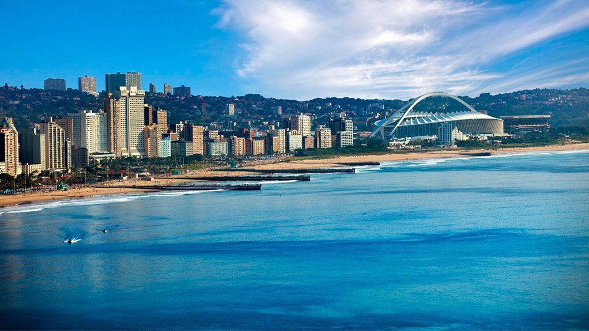

KwaZulu-Natal
About this province
KwaZulu-Natal is a province located in the southeastern part of South Africa. It is one of the nine provinces of the country and is known for its diverse geography, which includes mountains, coastlines, and savannas. The province is home to a rich cultural heritage, with a mix of Zulu and European influences.

Some of the main attractions in KwaZulu-Natal include:
- Durban: The largest city in the province and a popular tourist destination known for its beaches and vibrant atmosphere.
- Hluhluwe-Imfolozi Park: A national park that is home to the largest population of white rhinoceros in the world.
- Ukhahlamba-Drakensberg Park: A UNESCO World Heritage Site that features stunning mountain scenery and hiking trails.
- Battlefields Route: A scenic route that takes visitors through the province's historic battlefields, including the Battle of Isandlwana and the Battle of Rorke's Drift.